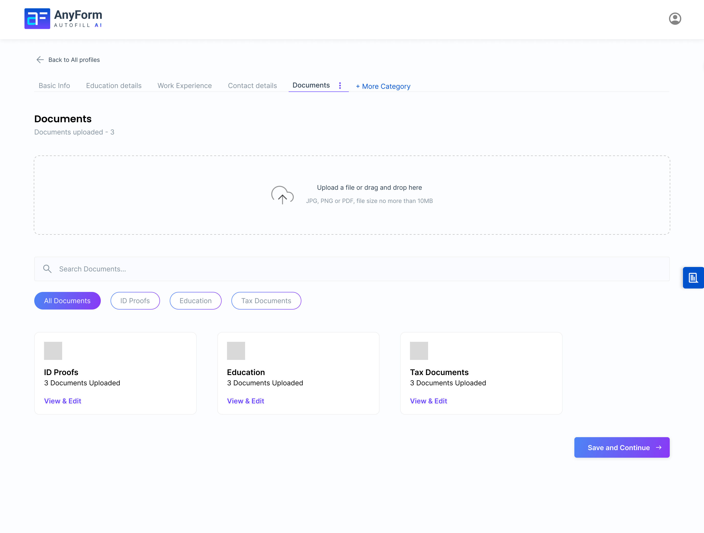

Anyform
AI Chrome ExtensionUX ResearchEnd-to-End Product Design

filing session
agencies
increase
01Overview
What is Anyform?
Anyform is an AI-powered Chrome extension designed to eliminate the repetitive, error-prone process of manually filling government and institutional web forms - specifically targeting visa agencies, college counselors, travel agents, and power users who fill the same forms dozens of times a week.
The extension reads user profile data, intelligently maps fields, and auto-fills complex multi-page forms - including the US DS-160 visa application - with a human-in-the-loop review step to ensure accuracy before submission. It lives entirely in the browser, stores data locally for privacy, and requires zero backend infrastructure.
02The Problem
A crisis hiding in plain sight
The DS-160 US visa application form contains 155+ fields across multiple pages. Every field must be re-entered for every client, every time - there is no native save, import, or profile system. For a paralegal handling 10 clients a week, this translates to 15+ hours a week of pure data entry, every single week.
Beyond visa applications, the pattern repeats across college admission forms, travel booking systems, and institutional portals. More than 50%+ abandonment rate in travel is attributed to form friction. The problem isn't data - users have their data. The problem is re-entry.
one DS-160 form
per paralegal
due to form friction
03Research
Understanding the landscape
I began with a competitive audit of existing form-filling tools to understand what already existed and where they fell short for professional, high-volume use cases.
LastPass Autofill
Designed for saved credentials, not complex multi-section government forms. No profile management or review flow.
RoboForm
Rule-based field mapping breaks on dynamic forms. No AI inference for ambiguous or conditional fields.
Magical
Text snippet expander - requires manual field placement. Not intelligent, not scalable for 155-field forms.
Browser Autofill
Only works for standard fields (name, address, email). Completely fails on government portals and custom form architectures.
The gap was clear: no competitor offers industry-specific intelligence for professional, high-volume, AI-assisted form filling with a human review layer. This was the space Anyform would occupy.
User segments identified
Through interviews and contextual observation, I identified four primary user segments, each with distinct needs and pain intensities.
- Immigration Paralegals - highest frequency users, most time lost, need accuracy above all
- College Counselors - multiple students, different profiles, need profile switching
- Travel Agents - speed-critical, need bulk capabilities
- Power Users (individuals) - filling forms for family members, need multi-profile management
04Define
Four personas, one core need
I synthesised research into four actionable personas. Each persona revealed a different facet of the same underlying need: trusted automation with human oversight.
The Paralegal
Fills DS-160s daily. Values accuracy over speed. Needs review screens and confidence indicators before submission.
The Counselor
Manages 30+ student profiles simultaneously. Needs fast profile switching and clean profile separation.
The Travel Agent
Speed-first user. Needs bulk filling and minimal interruption. Will tolerate more AI autonomy.
The Power User
Fills forms for self, spouse, children. Needs multi-profile management with clear labelling.
05Ideation
Three principles that shaped the architecture
profile-first architecture
Users build a profile once. The extension intelligently maps profile data to any form - no per-form configuration needed.
human-in-the-loop
AI fills, human confirms. A mandatory review step before every submission ensures trust without eliminating speed.
Local-First Storage
All profile data lives in the browser's local storage. No server, no sync, no breach surface. Privacy by architecture.
Confidence Indicators
Every AI-filled field shows a confidence score. Low-confidence fields are flagged for manual review. Trust is visible.
06Design
Onboarding & Profile Creation
The onboarding flow guides users through building their profile across five structured sections. Each section maps directly to the field categories found in most government forms.

Onboarding - Welcome & Setup

Create Profile - Personal Details

Basic Details

Education Section

Work Experience

Contact & Address Details

Documents Upload
Business Profile & Extension UI
Agency users create a Business Profile that contains client profiles, team access settings, and filing history. The extension panel is designed to be minimal - visible when needed, invisible when not.

Business Profile Dashboard

Individual Profile View

Chrome Extension - Active Panel

Human-in-the-loop Review & Confirm
07Testing
Usability testing & iteration
I conducted moderated usability sessions with participants from each persona segment - paralegals, counselors, and travel agents. Sessions were task-based: "Complete a DS-160 filing for a new client using Anyform."
A/B testing was run on two critical interaction patterns: (A) fill-then-review vs. (B) field-by-field confirmation. Fill-then-review won by a significant margin for experienced users; field-by-field was preferred for first-time use. The final design defaults to fill-then-review with an option to switch.
Targets set
Success benchmarks for shipping: 95%+ task success rate and 92%+ AI field accuracy across all persona segments.
target
target
per DS-160
08Outcome
The numbers
Filing time dropped from 155 min to 15 min per client. Agencies handle 3-4x more clients with the same team. Each user reclaims 20-30 hours per year from mechanical data entry.
09What I Learned
The biggest design challenge wasn't the interface - it was designing for trust. When someone's visa approval depends on your tool being accurate, a beautiful UI means nothing if users don't trust the AI. I learned to design confidence into every interaction - review screens, accuracy indicators, human-in-the-loop confirmations. Trust isn't a feature. It's the whole product.
This project sharpened how I think about AI-assisted products. The instinct is to optimise for automation - hide the AI, make it seamless. But in high-stakes contexts, the opposite is true: you need to make the AI visible, auditable, and correctable. Users don't want a black box. They want a smart assistant they can supervise.
Anyform taught me that the most important design layer in an AI product isn't the generation - it's the review. Getting the review UX right is what separates a tool people trust from a tool people abandon.